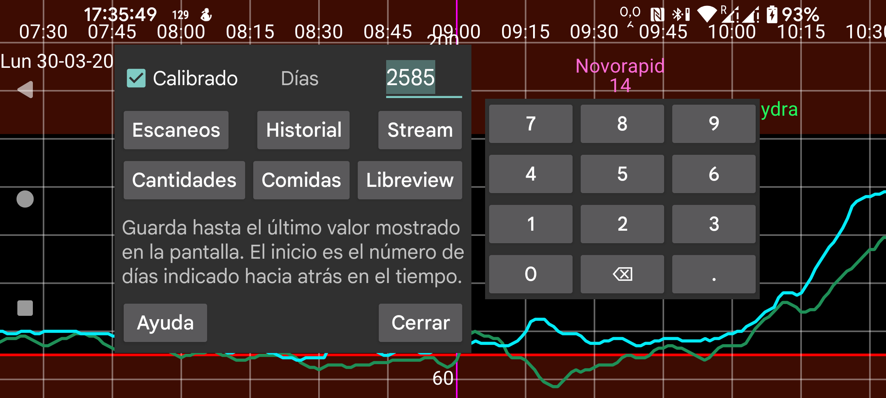

ar be de es hi ja nl pl ru tr uk uz zh en
Exporta datos de Juggluco a un archivo.
Las comidas se guardan en HTML. Todos los demás datos se guardan en .tsv (tab-separated values). Este formato puede cargarse en programas como LibreOffice Calc, Microsoft Excel, Mathematica o R. Es parecido a un .csv, pero usa tabuladores en lugar de comas para separar los campos. Los caracteres están codificados en UTF-8.
El significado de las columnas puede consultarse en https://www.juggluco.nl/Juggluco/webserver.html .
Días: desde Juggluco 7.1.0 puedes seleccionar cuántos días quieres guardar. La fecha final es el borde derecho de la pantalla. Si estás viendo datos antiguos en Juggluco, solo se exportarán esos datos antiguos, igual que en menú central izquierdo → Estadísticas.
Calibrado: guarda también los valores calibrados. Con esta opción, Scans, Stream e History guardan para cada elemento tanto el valor calibrado como el bruto. En formato Libreview solo se guarda el valor calibrado cuando existe; en caso contrario, el no calibrado.
Desde Juggluco 7.1.0 también es posible recibir estos datos a través del servidor web de Juggluco (menú izquierdo → Ajustes → Intercambiar datos → Servidor web), consulta https://www.juggluco.nl/Juggluco/webserver.html
Libreview: guarda los datos en formato Libreview. Esto permite importar datos de sensores que no son FreeStyle Libre en programas o servicios web que necesitan ese formato. Para sensores Dexcom se guardan los valores de cada 5 minutos, y para sensores Sibionics un valor de Stream cada 5 minutos. También guarda los valores de History de sensores Libre 0, 2 y 3. Solo guarda dosis de insulina, carbohidratos y comentarios cuando has asignado etiquetas a esas categorías en menú izquierdo → Ajustes → Intercambiar datos → Libreview → Enviar cantidades.